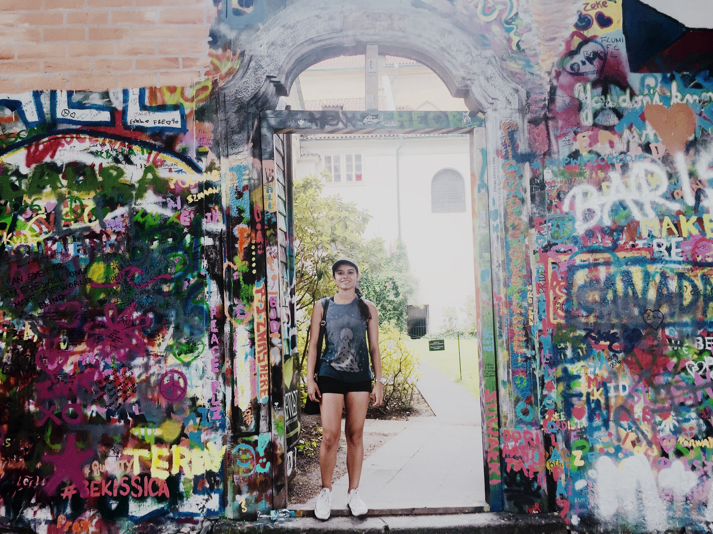

My name is Sruti Guhathakurta and I was born in Tempe, Arizona.
Some of my favorite things to do when I'm not coding are exploring Atlanta (especially the food scene),
running, and spending time with my friends and family.

My approach to the projects I work on is definitely influenced by my background. I've been to
eight different schools growing up in different states and countries before I settled down at Georgia Tech in 2014.
Because of this I enjoy surrounding myself with a diverse group of people and see value in everyone's opinions and
ideas. I don't believe in leading or following, but rather working at the same level and appreciating everyone's unique
contributions to whatever goal we're trying to accomplish. If you want to learn more about how I decided on CS,
read my "Why I code" section below. Also, you can view my projects or
some of these random apps I made for this website :).
Ever since I switched to Computer Science on May 15, 2016 (I even remember the date) I can't stop coding. I'll sit down in the morning with a goal in mind, and before I know it, it's dark outside and I'm still trying to get the pesky margin between the navbar and the jumbotron to go away. Yet somehow coding is what I go to when I'm celebrating a tough week full of tests, going through a rough patch, or just chilling on a Saturday night.
The first time I even considered Computer Science as a prospect was in fifth grade when I learned Scratch. I had an extremely active Scratch profile (I actually revisited it while writing this- "HighSchoolMusical911" haha) including games such as my rendering of pong, "Doggy Pong" and simpler things like a cat bouncing around the screen endlessly. After I retired my Scratch account, I encountered programming again in 7th grade when my dad gifted me a Java book. I made some simple functions like a tip calculator but I lost interest quickly and went back to playing Stunt Dirt Bike on Miniclip and watching TV.
Throughout the rest of my school years, I didn't give Computer Science much thought. For some reason I thought it involved sitting hunched over at a computer for days in a dark room and writing lines and lines of code that rarely amounted to anything. I loved my math classes, however, and decided to attend Georgia Tech as an Industrial Engineering major.
I liked Industrial Engineering but I always felt like there was something missing. The concepts I was learning were interesting but I wanted to be able to create things, not just analyze what was already there. I would always see that my friends in the College of Computing were so passionate about their major and eventually working for software companies that were dynamic and lively, nothing like the stereotype I had in mind. More than anything, I saw that they were creating their lives already, doing something bigger than just going to classes and retaining information. I didn't consider switching majors, however, because I didn't have much experience coding at the time.
Then, I took a Data Input and Manipulation class where we learned so many concepts like web scraping, regular expressions, csv, and SQL. I started using the things I learned to help with my Industrial Engineering classes such as creating number generators for my simulation class. Over the breaks, I would do little projects using Python, and before I knew it, I realized that I really liked coding.
At the end of the year, I finally made the switch to Computer Science and I couldn't be happier. Every day I get to work with my friends on projects I care a lot about and learn so many new skills at the same time. Most importantly, I feel like I have an opportunity to make a difference. Technology can help people in so many different ways whether it's connecting people to resources, giving people a platform to voice their opinions to a huge audience, or analyzing and interpreting data that can open so many doors. Now that I'm a part of this field, I can't wait to see what the future has in store.